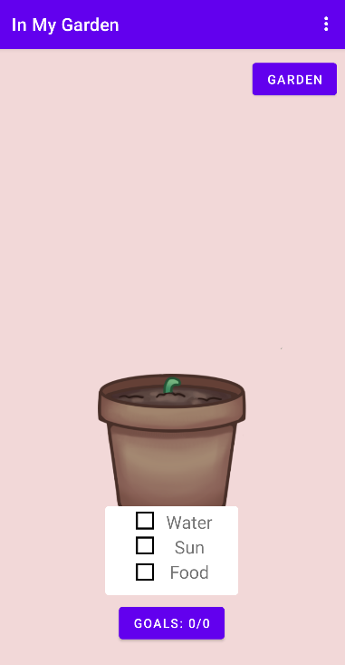
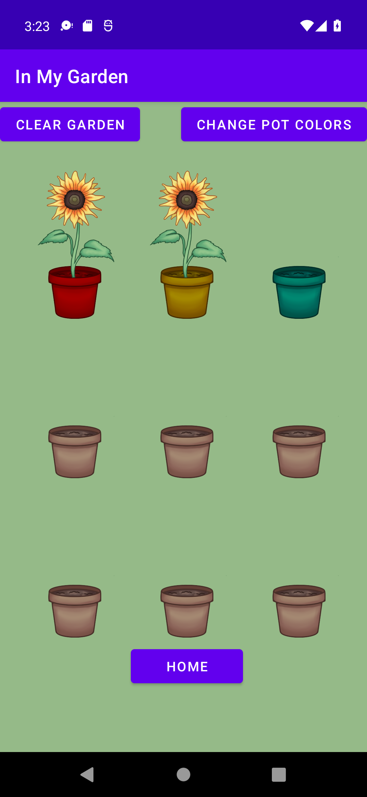

| In My Garden | |
| External link to .apk | |
| External link to source zip
paste link here |
|
|
App Description
In My Garden is a daily goal completion app aimed at helping users feel motivated to track daily goals.
Initially prompted with a login screen, the user is then taken to the homepage.
Within the homepage the user can see the flower they are currently growing and how far they are in completing their daily goals.
As goals are completed, nutrients for growing the flower are added.
If all goals are met by the end of the day, then when the user logs in the next day, the flower will be shown as having grown a little more.
The goals screen is where users add the goals they want to complete.
The user specifies the name of the goal, and they can mark whether they have completed it, as well as delete the goal if they wish.
The garden screen shows the flowers the user has grown.
Once a flower is done growing, it moves to the garden.
Once the garden fills up, the user can clear it to start a new garden.
Additional functionality includes: |
|
|  |  |
| External link to YouTube video
paste link here |
|
| List of external libraries and code used in this project
androidx.core,
androidx.appcompat,
com.google.android.material,
androidx.constraintlayout,
com.google.firebase (auth and database),
junit,
google services |
|